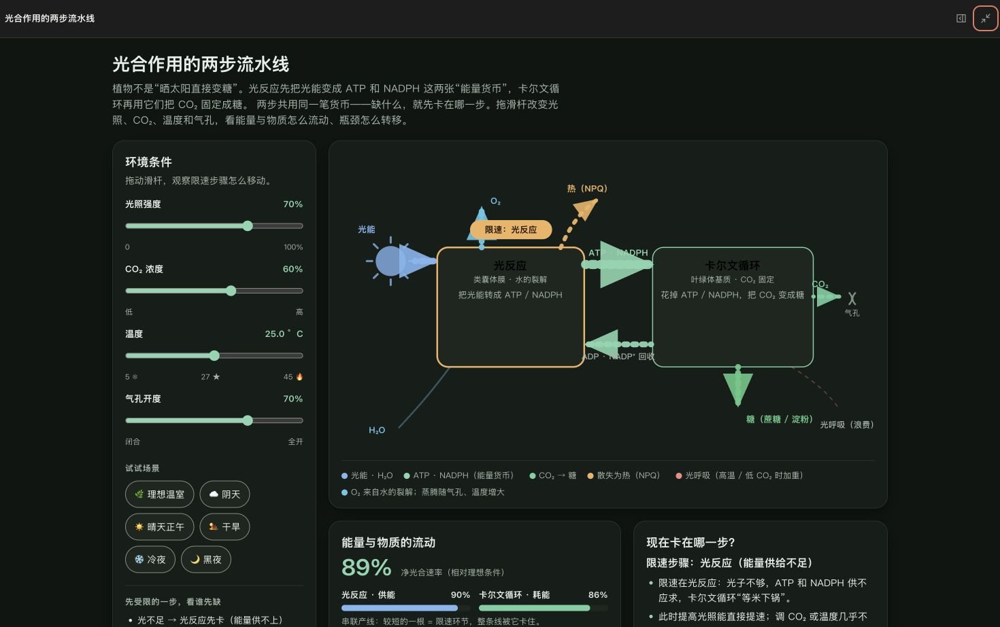

Generative UI inside the task
The Agent keeps the explanation in chat and turns only the part that benefits from interaction into a temporary React app.
Help me understand what limits photosynthesis. Let me change light, CO₂, temperature, and stomata myself.
Light reactions supply ATP and NADPH; the Calvin cycle spends them. The bottleneck moves as conditions change. Use the model to test that relationship.
